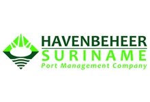
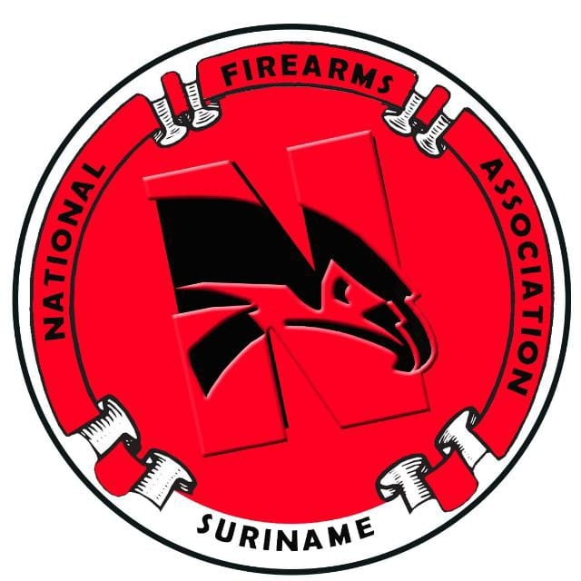
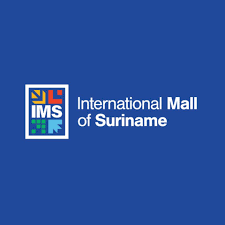
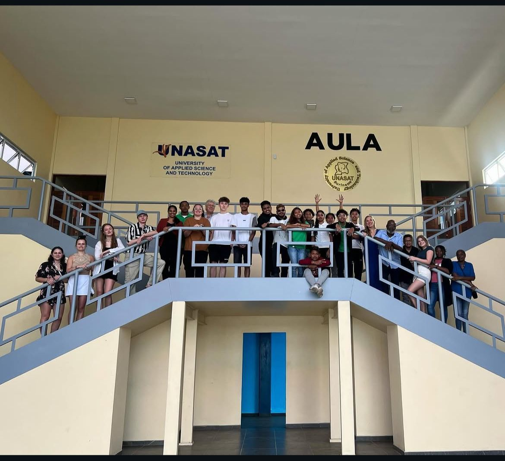
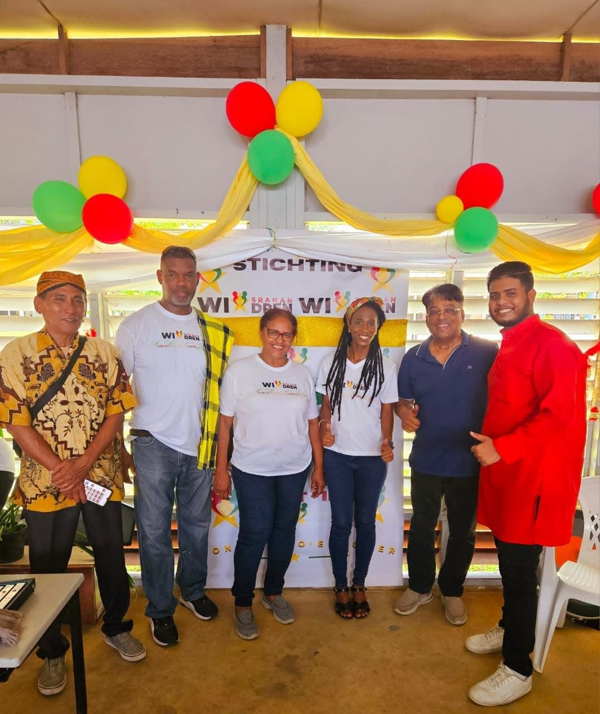
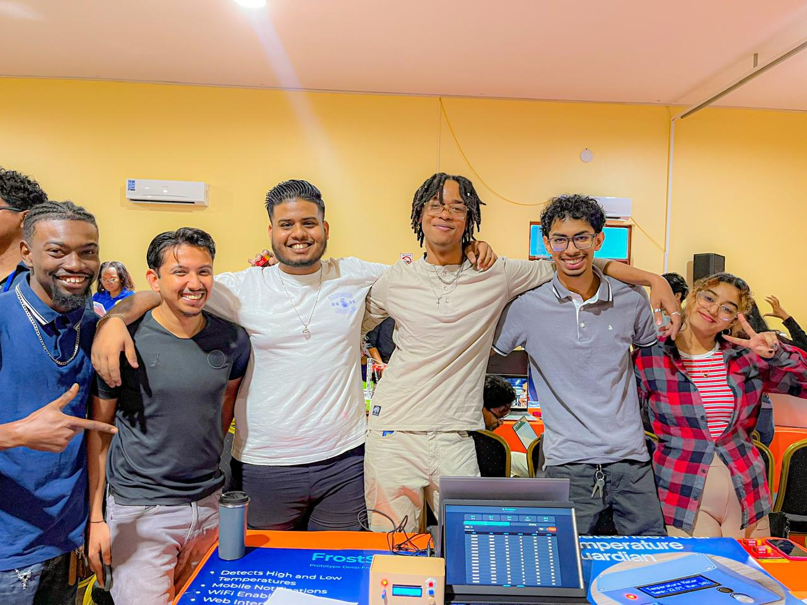

Portfolio
Een overzicht van mijn recente IT-implementaties en creatieve producties.
Havenbeheer Suriname
Spiceworks Ticketing
Volledige implementatie van het Spiceworks ticketsysteem voor het stroomlijnen van ICT-support aanvragen. Dit project omvatte de configuratie, user-management en het opzetten van automatische rapportages.

National Firearm Association
Cloud-based Odoo Kassasysteem
Ontwikkeling en implementatie van een cloud-based kassasysteem. Geoptimaliseerd voor realtime voorraadbeheer en veilige transactieverwerking binnen de NFA.

International Mall Suriname
Web-ontwikkeling www.ims.sr
Volledige oplevering van de website voor de International Mall Suriname. Focus op een gebruiksvriendelijke interface en mobiele optimalisatie voor bezoekers.

Nederlands Lyceum Co-op
Project www.parrot-sr.nl
Een internationaal samenwerkingsproject waarbij ik verantwoordelijk was voor de technische lancering en het onderhoud van het Parrot-SR platform.

Educatie & Cultuur
Workshop Muziek Kleuteronderwijs
In 2024 heb ik de workshop "WI NA SRANANG DRENG" verzorgd voor het kleuteronderwijs. Hierbij lag de focus op het overbrengen van muzikale basisvaardigheden en ritme aan de jongste generatie.

Unasat - Advanced Prototyping
Future Shift: FrostSense
Met mijn groep "Future Shift" hebben we de 3e plaats behaald tijdens de Unasat Advanced Prototyping Fair 2026. Ons product FrostSense werd geprezen om de innovatieve benadering en technische uitvoering.
